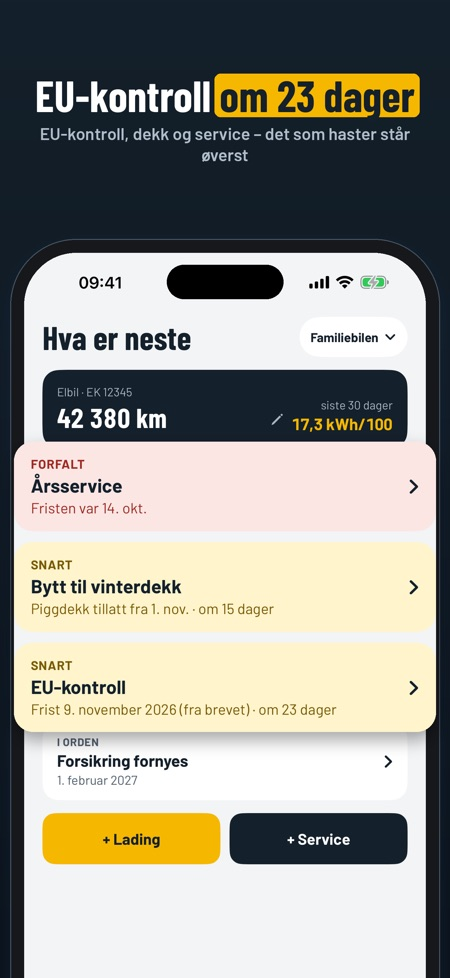
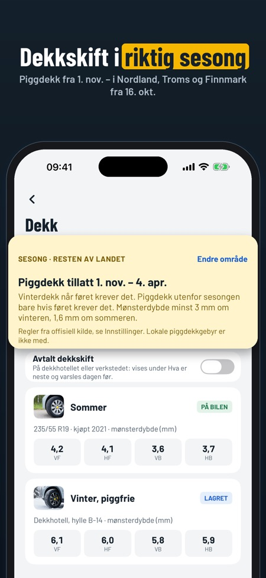
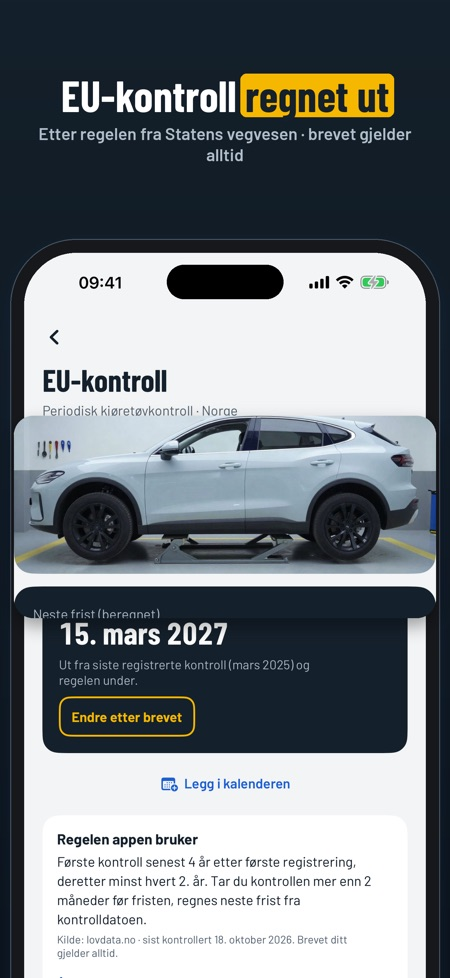

Bilboka regner ut neste EU-kontroll fra vognkortet og minner deg på dekkskift og service. Hele historikken følger med til du selger bilen.



Fristen regnes ut fra første registrering og regelen fra Statens vegvesen. Står det en annen dato i brevet, skriver du den inn, for brevet gjelder alltid.
Appen viser piggdekksesongen for der du bor, også for Nordland, Troms og Finnmark. Sjekk alltid gjeldende regler.
Ja, du legger inn mønsterdybde per hjul og får varsel når den er under kravet.
Ja, du kan logge liter eller kWh med pris og kilometerstand, og få forbruk per 100 km eller per mil.
Nei, det er ingen konto og ingen skiltoppslag. Alt lagres på telefonen.
Én bil, logg, kvitteringer, EU-kontroll, dekkvarsel og sikkerhetskopi kan brukes uten kjøp. Flere biler, grafer, deling av salgsrapport, dokumenter og CSV låses opp med et engangskjøp. Ingen abonnement.
Vet du når neste EU-kontroll er? Bilboka regner den ut fra vognkortet og Statens vegvesens regel – og minner deg på dekkskift og service. Hele historikken blir med til du selger bilen.
HVA ER NESTE
• EU-kontroll, årsservice, dekkskift og forsikring på én skjerm, det som haster øverst
• Påminnelser før fristene
EU-KONTROLL
• Neste frist regnes ut fra første registrering og regelen fra Statens vegvesen
• Står det en annen dato i brevet? Skriv den inn – brevet gjelder alltid
• Sjekkliste før kontrollen, og fristen rett inn i kalenderen
DEKK
• Piggdekksesongen for der du bor (også Nordland, Troms og Finnmark)
• Avtalt dekkskift på dekkhotellet, med påminnelse dagen før
• Sommer- og vinterdekk med mønsterdybde per hjul og hvor de er lagret
• Varsel når mønsterdybden er under kravet
DRIVSTOFF OG LADING
• Liter eller kWh, pris og kilometerstand
• Forbruk per 100 km eller per mil, regnet ut fra full tank eller full lading
• Kilometerstanden kan ikke gå bakover, og appen spør hvis et tall ser feil ut
• Oppdater kilometerstanden rett fra forsiden
SERVICE OG KOSTNADER
• Servicebok med verksted, hva som ble gjort, pris og skannet kvittering
• Neste service etter ditt eget intervall i km eller måneder
• Kostnader per måned og kategori, og kostnad per km
SALGSRAPPORT OG DOKUMENTER
• Full historikk som PDF til kjøperen, med kvitteringer om du vil – og priser skjult om du vil
• Se rapporten med dine egne oppføringer før du kjøper
• Vognkort, forsikringsbevis og garanti skannet inn og samlet per bil
• Eksport av alle oppføringer som CSV
SIKKERHETSKOPI
• Lagre alt som én fil og flytt det til en ny iPhone – uten kjøp
• Påminnelse når det er lenge siden forrige kopi
Ingen konto og ingen skiltoppslag: du legger inn bilen selv, og alt lagres på telefonen.
PRIS
Én bil, logg, kvitteringer, EU-kontroll, dekkvarsel og sikkerhetskopi kan brukes uten kjøp. Flere biler, kostnader og grafer, deling av salgsrapporten, dokumenter og CSV låses opp med et engangskjøp. Ingen abonnement.
Reglene er hentet fra Statens vegvesen, Transportstyrelsen, Færdselsstyrelsen og Traficom, med kilde og dato i appen. Bilboka er uavhengig og ikke tilknyttet dem. Sjekk alltid brevet du får.